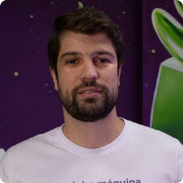
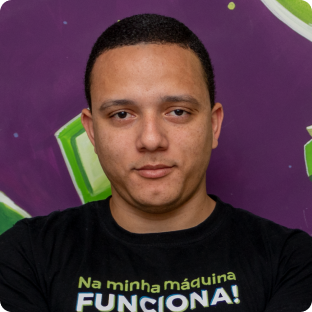
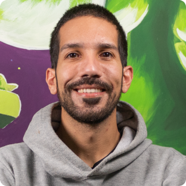
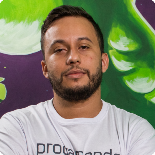

CTO de duas empresas de tecnologia, Devaria e Verzel Tecnologia, ambas focadas no
mercado de desenvolvimento de softwares.

Daniel Castello
CFO da Verzel Tecnologia, com mais de 18 anos de experiência no mercado de
programação, focado em soluções digitais e tecnologia. Bacharel em Sistemas
da Informação (FIAP); pós-graduado em Empreendedorismo e Novos Negócios (FGV); MBA em Gestão
de Tecnologia da Informação (FIAP), Arquitetura de Soluções (FIAP) e Gestão de Projetos
(FIAP).

Douglas Oliveira
COO da Verzel Soluções em Sistemas, com vasta experiência atuando com
desenvolvimento de diversos tipos de sistemas em diferentes segmentos. Antes
de ser diretor, é um dos melhores programadores do mercado, tanto em frontend quanto em
desenho de arquiteturas avançadas, tendo atuado em sistemas de finanças, seguros e inovação,
entre outras.

Filipe Campos
Co-Founder & CEO da Scoder, atuou anteriormente como CTO da Aurem, uma
startup inovadora em acessibilidade e comunicação. Especialista técnico em Python e
linguagens de backend avançadas, desenvolveu sistemas complexos para diversas
empresas, inclusive grandes multinacionais.

Kaique Jesus
Líder Técnico e especialista em desenvolvimento mobile, com sólidos
conhecimentos em arquitetura híbrida e nativa. Além de instrutor na
Devaria, também ministra cursos regulares em outras instituições de ensino de
tecnologia, e já foi instrutor de curso de aprendizagem na ONG Gerando Falcões, que
ajuda pessoas de comunidades a ingressarem no mercado.
Os Professores são especialistas em desenvolvimento de sistema e possuem
mais de 10 anos de experiencia
Todas as aulas de back-end e front-end serão conduzidas por
Rafa, Douglas e Felipe. as aulas de Mobileconduzida pelo professor Kaique e
As demais aulas serão administradas pelo professor Daniel, que é responsável pela gestão de
dados. 😊